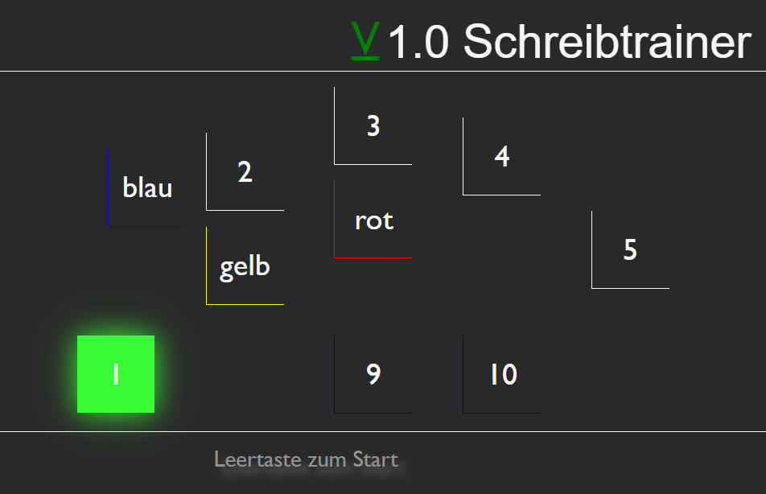
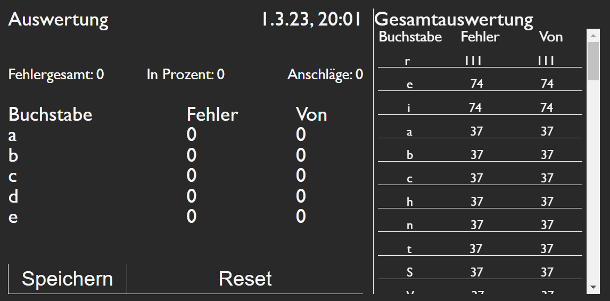

Hilfe zur Tastatur
Wenn Sie Ihre Einstellungen im Menü ausgewählt haben und bereit sind, mit dem Schreiben zu beginnen, können Sie den Übungsdurchlauf mit der Leertaste starten. Meine Webanwendung zeigt Ihnen immer die Tasten, die Sie drücken müssen, um den Buchstaben zu schreiben.
Die Tasten sind farbcodiert, um Ihnen zu helfen, Ihre Schreibgeschwindigkeit und -genauigkeit zu verbessern. Dunkelgrüne Tasten bedeuten, dass Sie die Taste einfach drücken müssen, um den entsprechenden Buchstaben zu schreiben.
Helle grün blinkende Tasten bedeuten, dass Sie diese vor den grünen Tasten drücken müssen. Diese Tasten werden verwendet, um Großbuchstaben oder Sonderzeichen zu schreiben.
Oberhalb der Tastatur sehen Sie den zu schreibenden Text, der in Echtzeit aktualisiert wird, während Sie schreiben. Der grün markierte Buchstabe zeigt Ihnen den aktuellen zu tippenden Buchstaben an, der durch einen Unterstrich hervorgehoben wird.
Es ist wichtig zu beachten, dass bei einem Leerzeichen kein Unterstrich oder eine Farbmarkierung zu sehen ist. Sobald Sie das Leerzeichen getippt haben, wird der nächste Buchstabe im Text grün markiert.
Hilfe zur Auswertung
In der Auswertung sehen Sie die Statistik Ihres gerade abgeschlossenen Übungsdurchlaufs auf der linken Seite. Sie erhalten Informationen zu:
- Fehler Gesamt: Die Gesamtzahl der Fehler, die Sie während des Durchlaufs gemacht haben.
- Fehler in Prozent: Der Prozentsatz der Fehler in Bezug auf die Gesamtzahl der getippten Zeichen.
- Anschläge pro Minute: Die durchschnittliche Anzahl der Anschläge pro Minute, die Sie während des Durchlaufs erreicht haben.
- Top 5 Fehler: Eine Liste der fünf Zeichen, bei denen Sie während des Durchlaufs die meisten Fehler gemacht haben.
Auf der rechten Seite sehen Sie die Gesamtauswertung aller gespeicherten Übungsdurchläufe. Die Zeichen sind nach den meisten Fehlern sortiert. Bitte beachten Sie, dass Sonderzeichen nicht in dieser Auswertung enthalten sind.
Mit dem Reset-Button gelangen Sie zurück zur Tastatur, ohne Ihren aktuellen Übungsdurchlauf zu speichern. Sie können diese Option nutzen, wenn Sie einen Fehler gemacht haben und den Durchlauf neu starten möchten oder wenn Sie Ihre Übung ohne eine Speicherung beenden möchten.
Mit dem Speicher-Button können Sie Ihren aktuellen Übungsdurchlauf zur Gesamtauswertung hinzufügen und kehren anschließend zurück zur Tastatur. Sie sollten diese Option wählen, wenn Sie Ihren Fortschritt speichern möchten.